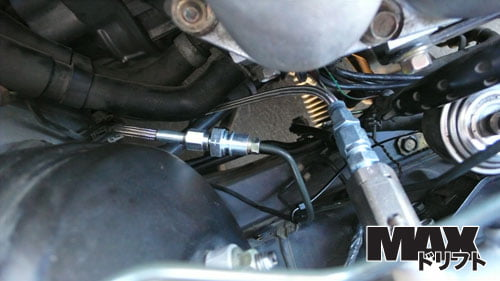
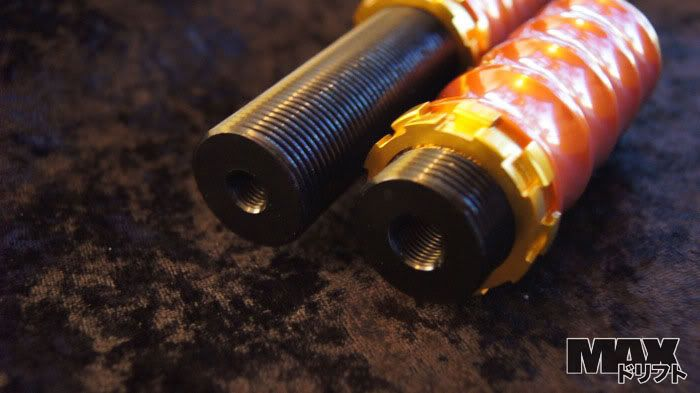
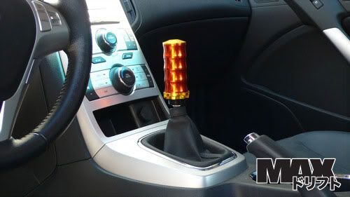
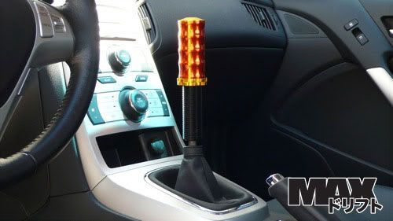

-
and aceman runs z32 brake pads in his z31 calipers.... amirite? -
For drifto purposes I would just use a hydraulic ebrake. Simple and easy to mount and run a couple of lines to the BMC.

For actual parking brake a line lock similar to the one AZC sold would work great. But as you mentioned mike there are plenty of write-ups and parts available that s13 guys use to retain factory ebrake on z32/Q45/z31.86na - BlueZ
Shiro #366 - Kouki Monster
85t - Mr Tickles -
I was looking at one of their weighted shits knobs a few day ago. Great stuff. -
I hope for your case you don't get a shit knob.
Wouldn't be too attractive to the female persuasion.1988 SS #71
Better to remain silent and be thought a fool, than to speak and remove all doubt. -
RedDemon wrote: I hope for your case you don't get a shit knob.
Wouldn't be too attractive to the female persuasion.


You are talking about these right? :quoi -
Have any of you tried the geomaster knuckles with this conversion?
http://www.driftworks.com/shop/suspensi … -hubs.html
not sure how good it will be with only the rear knuckle1984 300ZX - 1988 VG30T Engine, Trans, Diff, ECU
1987 300ZX TURBO - ( Parts Car ), 1988 300ZX TURBO - ( Parts Car )
1972 240Z -- Full restore - L28ET L6 Engine from 280zx, T-5 transmission, Rear diff from the 87
1998 Mazda B-2500, And a lot of bikes -
Hahaha sweet.Jonnytann09 wrote:
You are talking about these right? :quoiSomeone buy my mustang so I can get another zx… -
[quote]RXGhost wrote: Have any of you tried the geomaster knuckles with this conversion?
http://www.driftworks.com/shop/suspensi … -hubs.html
not sure how good it will be with only the rear knuckle
No but there are ton of s-chassis folks that do. There is a ton of reviews, write ups with results on zilvia
Jonnytann09 wrote:This is weak compared to what I am running now.Originally posted by RedDemon
You are talking about these right? :quoi86na - BlueZ
Shiro #366 - Kouki Monster
85t - Mr Tickles -
You still runnin that same one? Yea it is. :-( -
Any one thinking about doing this should know its really quite easy I did it myself in a weekend.what I really wanted to say was that my factory yoke fit right on the z32 pinion! Sweat right also if you run wheels with an aggressive fwd offset its a perfect fit ( my aftermarket jetta 18's look killer)2jz/t56 z31 build in progress
DD 03' jetta VR6/6-speed
we make costume suspention parts and offer powder coating services! I if your local we also can take on large fabricating jobs (roll cages, cross members, frame notification and more)
visit our website www.boostauto.biz -
Iam About to install that on my car
I have bought Stance kit
S13 subframe
and the last question i have: i want to install Z32 rear caliper and i want to know if axle shaft from s13 work with Z32 rear hub
can i put rear z32 brake and keep the rear s13 spindle
thanks david-alexandre -
If you use the bearing out of the s13 on the z32 knuckle it will work.
You can use the s14 for the 5 lug.
The axles are different sizes.88na2T-s13,q45 swap 12.6@110mph
87T 2+2 auto,stock -
The axles are only different sizes on the twin turbo z32, the non turbo is the same as the s13/s14 spline.lm7 swapped z
350z 6speed
s475 turbo
microsquirt ems
street car
http://www.youtube.com/user/redz31t?blend=21&ob=5 -
Z32 Calipers work on S14 for sure. I think I just threw some washers on to space them from the rotor a bit. I want to say that S13 is the same?sigpic -
well
s13 diff / s13 axle shaft / s13 spindle / z32 NA rear hub (and plate to install drum breake) / z32 na disk / z32 na caliper
do iam ok
EDIT:
if i need to use the z32 spindle i need to find the Stance adaptor for z32 they are different with s13

Copyright © 2006–. All rights reserved. Privacy Policy